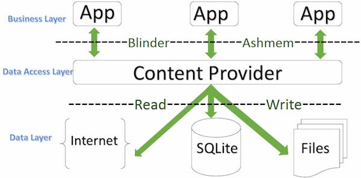
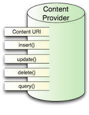
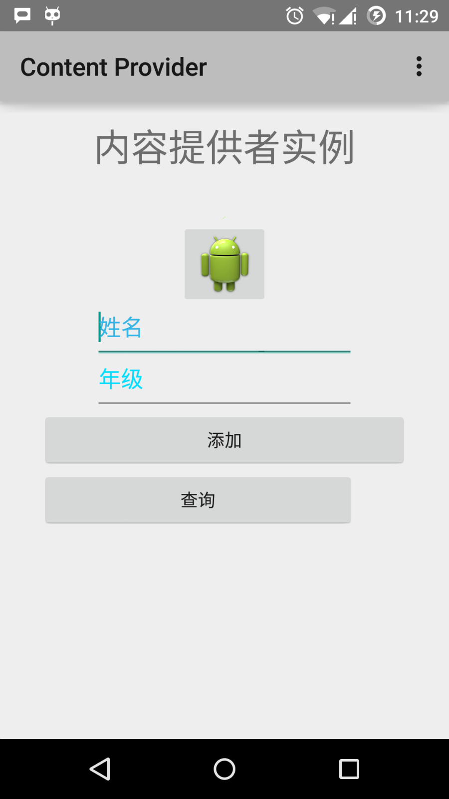
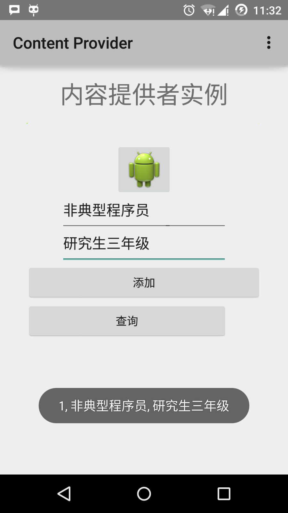

Android - Content Provider
Content provider components provide data from one application to other applications through requests. These requests are handled by the methods of the ContentResolver class. Content providers can use different ways to store data. Data can be stored in a database, files, or even on the network.

Sometimes there is a need to share data between applications. This is where content providers become very useful.
Content providers can centralize content, and when necessary, multiple different applications can access it. Content providers behave very much like databases. You can query and edit its content, use insert(), update(), delete() and query() to add or delete content. In most cases data is stored in a SQLite database.
Content providers are implemented as subclasses of the ContentProvider class. You need to implement a series of standard APIs so that other applications can perform transactions.
public class MyApplication extends ContentProvider {
}
Content URI
To query a content provider, you need to specify the query string in the form of a URI in the following format:
<prefix>://<authority>/<data_type>/<id>
The following is the specific explanation of each part of the URI:
| Part | Description |
|---|---|
| prefix | Prefix: always set to content:// |
| authority | Authority: specifies the name of the content provider, e.g., contacts, browser, etc. Third-party content providers can use full names, such as: cn.programmer.statusprovider |
| data_type | Data type: this indicates the type of data in this particular content provider. For example: if you want to get all contacts through the content provider Contacts, the data path is people, then the URI will look like this: content://contacts/people |
| id | This specifies a particular requested record. For example: if you look up a contact with ID 5 in the content provider Contacts, the URI looks like this: content://contacts/people/5 |
Creating a Content Provider
Here describes the simple steps to create your own content provider.
- First, you need to subclass the ContentProviderbase class to create a content provider class.
- Second, you need to define the URI address of your content provider used to access the content.
- Next, you need to create a database to store the content. Usually, Android uses a SQLite database, and override the onCreate() method in the framework to use the methods of SQLiteOpenHelper to create or open the provider's database. When your application is started, the onCreate() method of each of its content providers will be called on the application's main thread.
- Finally, register the content provider in AndroidManifest.xml using the <provider.../> tag.
Here are some methods you need to override in the ContentProvider class to make your content provider work properly:

- onCreate(): called when the provider is started.
- query(): this method accepts requests from clients. The result is returning a Cursor object.
- insert(): this method inserts new records into the content provider.
- delete(): this method deletes existing records from the content provider.
- update(): this method updates existing records in the content provider.
- getType(): this method returns the metadata type for the given URI.
Example
This example explains how to create your own content provider. Let's follow the steps below:
| Step | Description |
|---|---|
| 1 | Use Android Studio to create an Android application and name it Content Provider, under the package com.runoob.contentprovider, and create an empty activity. |
| 2 | Modify the main activity file MainActivity.java to add two new methods, onClickAddName() and onClickRetrieveStudents(). |
| 3 | Create a new Java file StudentsProvider.java under the package com.runoob.contentprovider to define the actual provider and associate methods. |
| 4 | Use the <provider.../> tag to register the content provider in AndroidManifest.xml. |
| 5 | Modify the default content of the res/layout/activity_main.xml file to include a simple interface for adding student records. |
| 6 | No need to modify strings.xml; Android Studio will take care of the strings.xml file. |
| 7 | Start the Android emulator to run the application and verify the results of the changes made to the application. |
Below is the content of the modified main activity file src/com.runoob.contentprovider/MainActivity.java. This file contains each of the basic lifecycle methods. We have added two new methods, onClickAddName() and onClickRetrieveStudents(), to let the application handle user interactions.
package com.runoob.contentprovider;
import android.net.Uri;
import android.os.Bundle;
import android.app.Activity;
import android.content.ContentValues;
import android.content.CursorLoader;
import android.database.Cursor;
import android.view.Menu;
import android.view.View;
import android.widget.EditText;
import android.widget.Toast;
import com.runoob.contentprovider.R;
public class MainActivity extends Activity {
@Override
protected void onCreate(Bundle savedInstanceState) {
super.onCreate(savedInstanceState);
setContentView(R.layout.activity_main);
}
@Override
public boolean onCreateOptionsMenu(Menu menu) {
getMenuInflater().inflate(R.menu.menu_main, menu);
return true;
}
public void onClickAddName(View view) {
// Add a new student record
ContentValues values = new ContentValues();
values.put(StudentsProvider.NAME,
((EditText)findViewById(R.id.editText2)).getText().toString());
values.put(StudentsProvider.GRADE,
((EditText)findViewById(R.id.editText3)).getText().toString());
Uri uri = getContentResolver().insert(
StudentsProvider.CONTENT_URI, values);
Toast.makeText(getBaseContext(),
uri.toString(), Toast.LENGTH_LONG).show();
}
public void onClickRetrieveStudents(View view) {
// Retrieve student records
String URL = "content://com.example.provider.College/students";
Uri students = Uri.parse(URL);
Cursor c = managedQuery(students, null, null, null, "name");
if (c.moveToFirst()) {
do{
Toast.makeText(this,
c.getString(c.getColumnIndex(StudentsProvider._ID)) +
", " + c.getString(c.getColumnIndex( StudentsProvider.NAME)) +
", " + c.getString(c.getColumnIndex( StudentsProvider.GRADE)),
Toast.LENGTH_SHORT).show();
} while (c.moveToNext());
}
}
}
Create a new file StudentsProvider.java under the package com.runoob.contentprovider. Below is the content of src/com.runoob.contentprovider/StudentsProvider.java.
package com.runoob.contentprovider;
import java.util.HashMap;
import android.content.ContentProvider;
import android.content.ContentUris;
import android.content.ContentValues;
import android.content.Context;
import android.content.UriMatcher;
import android.database.Cursor;
import android.database.SQLException;
import android.database.sqlite.SQLiteDatabase;
import android.database.sqlite.SQLiteOpenHelper;
import android.database.sqlite.SQLiteQueryBuilder;
import android.net.Uri;
import android.text.TextUtils;
public class StudentsProvider extends ContentProvider {
static final String PROVIDER_NAME = "com.example.provider.College";
static final String URL = "content://" + PROVIDER_NAME + "/students";
static final Uri CONTENT_URI = Uri.parse(URL);
static final String _ID = "_id";
static final String NAME = "name";
static final String GRADE = "grade";
private static HashMap<String, String> STUDENTS_PROJECTION_MAP;
static final int STUDENTS = 1;
static final int STUDENT_ID = 2;
static final UriMatcher uriMatcher;
static{
uriMatcher = new UriMatcher(UriMatcher.NO_MATCH);
uriMatcher.addURI(PROVIDER_NAME, "students", STUDENTS);
uriMatcher.addURI(PROVIDER_NAME, "students/#", STUDENT_ID);
}
/**
* 数据库特定常量声明
*/
private SQLiteDatabase db;
static final String DATABASE_NAME = "College";
static final String STUDENTS_TABLE_NAME = "students";
static final int DATABASE_VERSION = 1;
static final String CREATE_DB_TABLE =
" CREATE TABLE " + STUDENTS_TABLE_NAME +
" (_id INTEGER PRIMARY KEY AUTOINCREMENT, " +
" name TEXT NOT NULL, " +
" grade TEXT NOT NULL);";
/**
* 创建和管理提供者内部数据源的帮助类.
*/
private static class DatabaseHelper extends SQLiteOpenHelper {
DatabaseHelper(Context context){
super(context, DATABASE_NAME, null, DATABASE_VERSION);
}
@Override
public void onCreate(SQLiteDatabase db)
{
db.execSQL(CREATE_DB_TABLE);
}
@Override
public void onUpgrade(SQLiteDatabase db, int oldVersion, int newVersion) {
db.execSQL("DROP TABLE IF EXISTS " + STUDENTS_TABLE_NAME);
onCreate(db);
}
}
@Override
public boolean onCreate() {
Context context = getContext();
DatabaseHelper dbHelper = new DatabaseHelper(context);
/**
* 如果不存在，则创建一个可写的数据库。
*/
db = dbHelper.getWritableDatabase();
return (db == null)? false:true;
}
@Override
public Uri insert(Uri uri, ContentValues values) {
/**
* 添加新学生记录
*/
long rowID = db.insert( STUDENTS_TABLE_NAME, "", values);
/**
* 如果记录添加成功
*/
if (rowID > 0)
{
Uri _uri = ContentUris.withAppendedId(CONTENT_URI, rowID);
getContext().getContentResolver().notifyChange(_uri, null);
return _uri;
}
throw new SQLException("Failed to add a record into " + uri);
}
@Override
public Cursor query(Uri uri, String[] projection, String selection,String[] selectionArgs, String sortOrder) {
SQLiteQueryBuilder qb = new SQLiteQueryBuilder();
qb.setTables(STUDENTS_TABLE_NAME);
switch (uriMatcher.match(uri)) {
case STUDENTS:
qb.setProjectionMap(STUDENTS_PROJECTION_MAP);
break;
case STUDENT_ID:
qb.appendWhere( _ID + "=" + uri.getPathSegments().get(1));
break;
default:
throw new IllegalArgumentException("Unknown URI " + uri);
}
if (sortOrder == null || sortOrder == ""){
/**
* 默认按照学生姓名排序
*/
sortOrder = NAME;
}
Cursor c = qb.query(db, projection, selection, selectionArgs,null, null, sortOrder);
/**
* 注册内容URI变化的监听器
*/
c.setNotificationUri(getContext().getContentResolver(), uri);
return c;
}
@Override
public int delete(Uri uri, String selection, String[] selectionArgs) {
int count = 0;
switch (uriMatcher.match(uri)){
case STUDENTS:
count = db.delete(STUDENTS_TABLE_NAME, selection, selectionArgs);
break;
case STUDENT_ID:
String id = uri.getPathSegments().get(1);
count = db.delete( STUDENTS_TABLE_NAME, _ID + " = " + id +
(!TextUtils.isEmpty(selection) ? " AND (" + selection + ')' : ""), selectionArgs);
break;
default:
throw new IllegalArgumentException("Unknown URI " + uri);
}
getContext().getContentResolver().notifyChange(uri, null);
return count;
}
@Override
public int update(Uri uri, ContentValues values, String selection, String[] selectionArgs) {
int count = 0;
switch (uriMatcher.match(uri)){
case STUDENTS:
count = db.update(STUDENTS_TABLE_NAME, values, selection, selectionArgs);
break;
case STUDENT_ID:
count = db.update(STUDENTS_TABLE_NAME, values, _ID + " = " + uri.getPathSegments().get(1) +
(!TextUtils.isEmpty(selection) ? " AND (" +selection + ')' : ""), selectionArgs);
break;
default:
throw new IllegalArgumentException("Unknown URI " + uri );
}
getContext().getContentResolver().notifyChange(uri, null);
return count;
}
@Override
public String getType(Uri uri) {
switch (uriMatcher.match(uri)){
/**
* 获取所有学生记录
*/
case STUDENTS:
return "vnd.android.cursor.dir/vnd.example.students";
/**
* 获取一个特定的学生
*/
case STUDENT_ID:
return "vnd.android.cursor.item/vnd.example.students";
default:
throw new IllegalArgumentException("Unsupported URI: " + uri);
}
}
}
Below is the modified AndroidManifest.xml file. Here the <provider.../> tag has been added to include our content provider:
<?xml version="1.0" encoding="utf-8"?>
<manifest xmlns:android="http://schemas.android.com/apk/res/android"
package="com.runoob.contentprovider"
android:versionCode="1"
android:versionName="1.0" >
<uses-sdk
android:minSdkVersion="8"
android:targetSdkVersion="22" />
<application
android:allowBackup="true"
android:icon="@drawable/ic_launcher"
android:label="@string/app_name"
android:theme="@style/AppTheme" >
<activity
android:name="com.runoob.contentprovider.MainActivity"
android:label="@string/app_name" >
<intent-filter>
<action android:name="android.intent.action.MAIN" />
<category android:name="android.intent.category.LAUNCHER" />
</intent-filter>
</activity>
<provider android:name="StudentsProvider"
android:authorities="com.example.provider.College" >
</provider>
</application>
</manifest>
Below is the content of the res/layout/activity_main.xml file:
<RelativeLayout xmlns:android="http://schemas.android.com/apk/res/android"
xmlns:tools="http://schemas.android.com/tools" android:layout_width="match_parent"
android:layout_height="match_parent" android:paddingLeft="@dimen/activity_horizontal_margin"
android:paddingRight="@dimen/activity_horizontal_margin"
android:paddingTop="@dimen/activity_vertical_margin"
android:paddingBottom="@dimen/activity_vertical_margin" tools:context=".MainActivity">
<TextView
android:id="@+id/textView1"
android:layout_width="wrap_content"
android:layout_height="wrap_content"
android:text="内容提供者实例"
android:layout_alignParentTop="true"
android:layout_centerHorizontal="true"
android:textSize="30dp" />
<TextView
android:id="@+id/textView2"
android:layout_width="wrap_content"
android:layout_height="wrap_content"
android:text="www.runoob.com"
android:textColor="#ff87ff09"
android:textSize="30dp"
android:layout_below="@+id/textView1"
android:layout_centerHorizontal="true" />
<ImageButton
android:layout_width="wrap_content"
android:layout_height="wrap_content"
android:id="@+id/imageButton"
android:src="@drawable/ic_launcher.html"
android:layout_below="@+id/textView2"
android:layout_centerHorizontal="true" />
<Button
android:layout_width="wrap_content"
android:layout_height="wrap_content"
android:id="@+id/button2"
android:text="添加"
android:layout_below="@+id/editText3"
android:layout_alignRight="@+id/textView2"
android:layout_alignEnd="@+id/textView2"
android:layout_alignLeft="@+id/textView2"
android:layout_alignStart="@+id/textView2"
android:onClick="onClickAddName"/>
<EditText
android:layout_width="wrap_content"
android:layout_height="wrap_content"
android:id="@+id/editText"
android:layout_below="@+id/imageButton"
android:layout_alignRight="@+id/imageButton"
android:layout_alignEnd="@+id/imageButton" />
<EditText
android:layout_width="wrap_content"
android:layout_height="wrap_content"
android:id="@+id/editText2"
android:layout_alignTop="@+id/editText"
android:layout_alignLeft="@+id/textView1"
android:layout_alignStart="@+id/textView1"
android:layout_alignRight="@+id/textView1"
android:layout_alignEnd="@+id/textView1"
android:hint="姓名"
android:textColorHint="@android:color/holo_blue_light" />
<EditText
android:layout_width="wrap_content"
android:layout_height="wrap_content"
android:id="@+id/editText3"
android:layout_below="@+id/editText"
android:layout_alignLeft="@+id/editText2"
android:layout_alignStart="@+id/editText2"
android:layout_alignRight="@+id/editText2"
android:layout_alignEnd="@+id/editText2"
android:hint="年级"
android:textColorHint="@android:color/holo_blue_bright" />
<Button
android:layout_width="wrap_content"
android:layout_height="wrap_content"
android:text="查询"
android:id="@+id/button"
android:layout_below="@+id/button2"
android:layout_alignRight="@+id/editText3"
android:layout_alignEnd="@+id/editText3"
android:layout_alignLeft="@+id/button2"
android:layout_alignStart="@+id/button2"
android:onClick="onClickRetrieveStudents"/>
</RelativeLayout>
Make sure the res/values/strings.xml file contains the following:
<?xml version="1.0" encoding="utf-8"?>
<resources>
<string name="app_name">Content Provider</string>
<string name="action_settings">Settings</string>
</resources>
Let's run the Content Provider application we just modified. I assume you have already created an AVD when setting up the environment. Open the activity file in your project and click theicon to run the application in Android Studio. Android Studio installs the application on the AVD and starts it. If everything goes well, the following will be displayed on the emulator window:

Enter a name and grade, and click the "Add" button. This will add a student record to the data and display a message at the bottom. The message content shows the content provider URI that includes the number of records added to the database. This operation uses the insert() method. Repeat this process to add more students to the content provider's database.

Once you have finished adding database records, it is time to request these records back from the content provider. Click the "Query" button, which will fetch and display all data records through the implemented query() method.
You can provide callback methods in MainActivity.java to write update and delete operations, and modify the user interface to add update and delete operations.
You can use existing content providers in this way, such as Contacts. You can also use this approach to develop an excellent database-oriented application. You can perform all database operations as in the example introduced above, such as read, write, update, and delete.
Other Extensions
Click me to share notes
<p style="font-size:14px;">The note must be an extension of this article's content!</p><br> <p style="font-size:12px;"><a href="../tougao.html" target="_blank">To submit an article, click here</a></p> <p style="font-size:14px;"><a href="../w3cnote/runoob-user-test-intro.html" target="_blank">How to obtain a registration invite code</a></p> <h3 class="text-muted"><i class="fa fa-info-circle" aria-hidden="true"></i> You must <a href=";.html" class="runoob-pop">log in</a> before sharing notes!</h3> <p><a href="../w3cnote/runoob-user-test-intro.html" target="_blank">How to obtain a registration invite code</a></p>